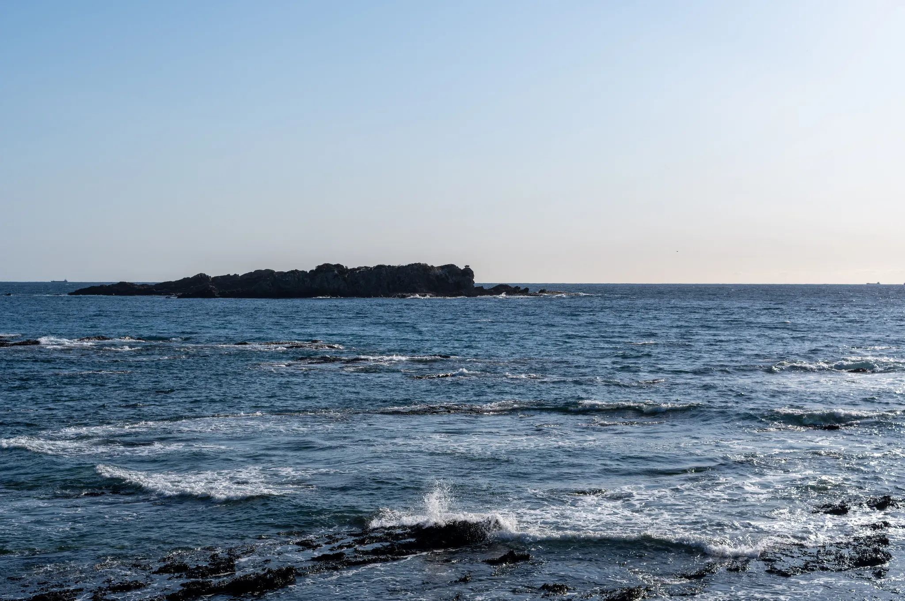
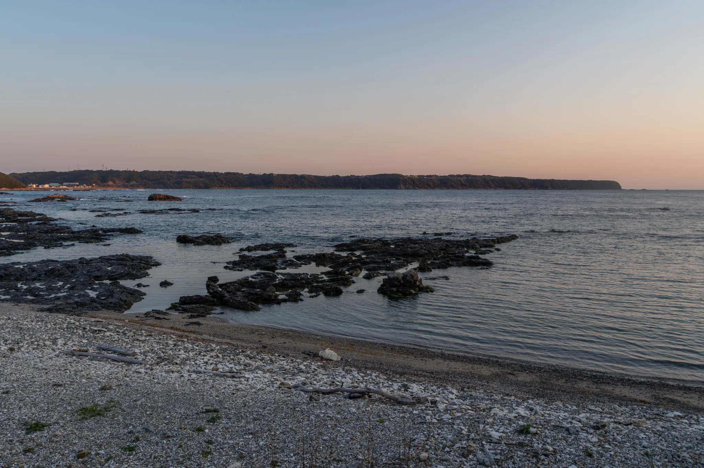

デジタル作業をほとんど終えました。今回はあまり作業は多くはなく、ちょこちょこした作業はもしかするとリモートで対応可能かもしれません
あと数日で串本を離れるかもしれません。

駅近のオークワで夕食の買い物をすませたあとオレンンジハウスに寄り、オーナー夫妻としばらく談笑。
オーナーのご主人はぼくのことを覚えていてくださっていたのですが、奥さんはぼくのことはあまり覚えていらっしゃらなかったようです。
どこかで会った気がするとおっしゃっていたと、あとで師匠に車中で聞きました。
30 年以上前に師匠の非常勤スタッフだった当時、いろいろお叱りやご指導をいただいていたのですが、さすがに 30 年以上前のことなので、あまり覚えておられなかったようでした。
もちろん 30 年前のオレンジハウスはダイバーで溢れかえっていて、奥さんはダイバーの世話に多忙を極わめていらっしゃったこともあり、1 ダイビングショップの 1 スタッフのことなどいちいち覚えていられないということもありました。
まだ誰もが若かったあの頃、口にすることもなかった別れが続く近況などもうかがって、少しさみしく、ちょっぴり悲しい気分になったりもしました。
やっぱり刻は情け容赦もなく過ぎていくのだなと改めて思いしらされました。
今回、あと何日串本にいるのかはわかりませんが、今の時間を大切にしたいと思いました。
ぼくはあと何年、師匠のもとに通うことができるんだろうか……
P.S.
明日 3 月 1 日は民間ロケットのカイロスの打ち上げ予定日だそうです。仕事らしい仕事も、ほとんど残っていないので、明日は朝からカイロスの打ち上げを見物してきます。